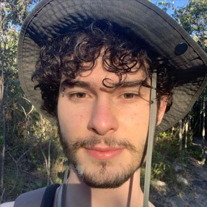

Artista técnico · engenheiro gráfico · aspirante a VJ
Felipe Dantas
Borges.
Construo sistemas jogáveis, ferramentas visuais e gráficos expressivos em tempo real.
desenvolvimento de jogos / programação / design / gráficos em tempo real

Disponível para projetos
01 / sobre
Construo jogos
com intenção.
Sou bacharel em Ciência da Computação pela Universidade de Brasília. Minha experiência passa por engines próprias, Unity, programação de sistemas, interface, gráficos e design de jogos.
Universidade de Brasília
e experiências digitais
02 / projetos
Trabalhos
selecionados.
Uma seleção de projetos desenvolvidos entre 2021 e 2025, de engines customizadas a jogos publicados.
03 / ferramentas
Linguagens
C · C++ · C# · Rust · Python · JavaScript · TypeScript · GDScript · Assembly RISC-V
Desenvolvimento
Unity · Godot · SDL2 · OpenGL · Git · Blender · Fusion 360 · Scrum
Idiomas
Português nativo · Inglês fluente · Alemão básico
04 / contato